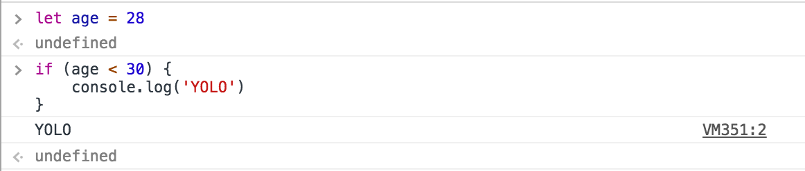

язык программирования
JavaScript
План на 4 лекции
- Настройка окружения: VS Code, Node.js, git.
- Базовые понятия: синтаксис, типы данных.
- Особенности языка: функции, библиотека.
- Много живого кодинга.
Сегодня
- История JavaScript
- В чём запускать код?
- Как выбрать текстовый редактор?
- Зачем нужна система контроля версий?
- Что нужно знать, чтобы сдать домашку?
- Демо.
Краткая история JavaScript
- 1995 – Первая реализация

Краткая история JavaScript
- 1995 – Первая реализация
- 1998 – Ajax

AJAX
Позволяет обновить часть страницы, не перезагружая её целиком.
Краткая история JavaScript
- 1995 – Первая реализация
- 1998 – Ajax
- 2006 – jQuery
JavaScript
document
.getElementsByTagName('header')[0]
jQuery
$('header')
Краткая история JavaScript
- 1995 – JavaScript
- 1998 – Ajax
- 2006 – jQuery
- 2009 – Node.js

Краткая история JavaScript
- 1995 – JavaScript
- 1998 – Ajax
- 2006 – jQuery
- 2009 – Node.js
- 2014 – Babel.js
Разработчик пишет на современном языке
let sum = (a, b = 0) => a + b;
В браузере выполянется совместимый код
var sum = function sum(a) {
return a + (
arguments.length > 1 &&
arguments[1] !== undefined
) ? arguments[1] : 0; };
Что нас ждёт дальше?
- Progressive Web Apps

Что нас ждёт дальше?
- Progressive Web Apps
- WebAssembly
WebAssembly Demo
Epic Zen Garden (Firefox)
Запуск кода
console.log('Hello world');
Консоль браузера
- Windows: Ctrl + Shift + J
- MacOS: ⌘ + ⌥ + J

Браузеры для разработчика

Node.js
> node --version
v8.6.0
Node REPL
В терминале набрать node и нажать Enter
> let sum = 1 + 1
undefined
> sum
2
Выход – Ctrl + D
Текстовый редактор
В нём вы проводите большую часть времени. Поэтому отнеситесь к выбору ответственно.
Как выбрать
- поддержка используемых технологий
- скорость и производительность
- функциональность
- популярность
- цена
Варианты
Visual Studio Code
Рекомендованный редактор для прохождения курса.
- мощная поддержка языка
- инструменты для работы с git
- встроенный терминал
Демо
Пишем чат-бота. Как в Телеграме, только для терминала. И очень простенького.
> node bot.js hello world
hello world
git
– система контроля версий.
В целом, нужна для двух вещей: версионирования кода и совместной разработки.
GitHub
– графический интерфейс для git.
Есть и другая версия: это социальная сеть для программистов.
Ссылки про git/GitHub
- Введение. Основы языка. GitHub
Язык программирования Javascript 2016 - git
Разработка веб-приложений 2016 - Github (слайды, видео)
Разработка веб-приложений 2015
Демо
Отправляем пулл-реквест с домашкой.
Перед началом работы
клонируем репозиторий
и устанавливаем зависимости.
git clone https://github.com/urfu-...
cd demo-task-1
npm install
Перед отправкой домашки
запускаем линтер и тесты.
npm run lint
npm run test
После прохождения проверок
создаём коммит в VS Code
и отправляем его на гитхаб.
git push
Материалы к курсу